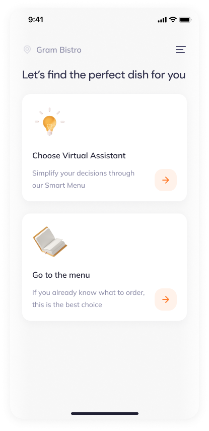
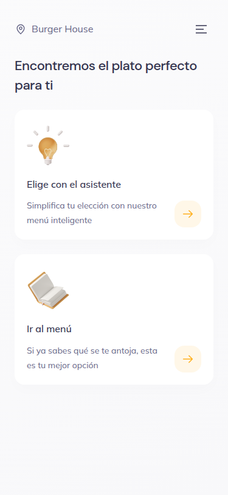
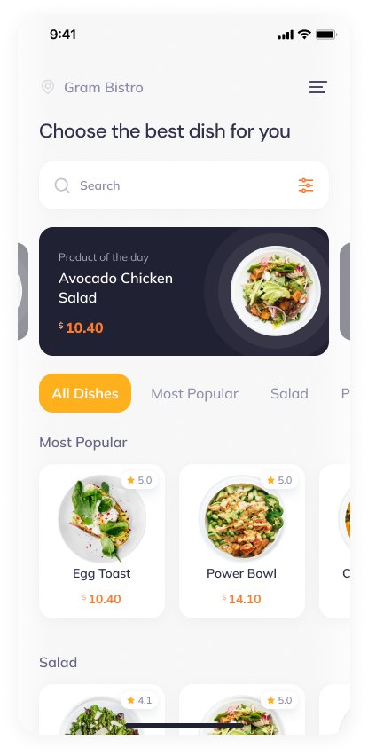
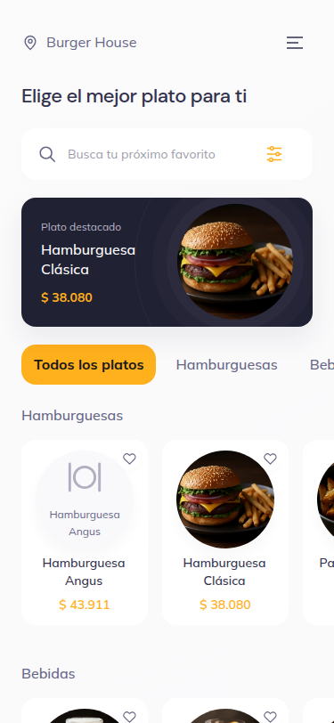

Comparación visual del 12 de septiembre de 2026. A la izquierda, exportación original con marco y barra del teléfono. A la derecha, web a 375 × 812, con el nombre, idioma, platos y precios reales del restaurante. Esta revisión es parcial: no certifica identidad píxel a píxel ni cobertura de las 99 pantallas.



